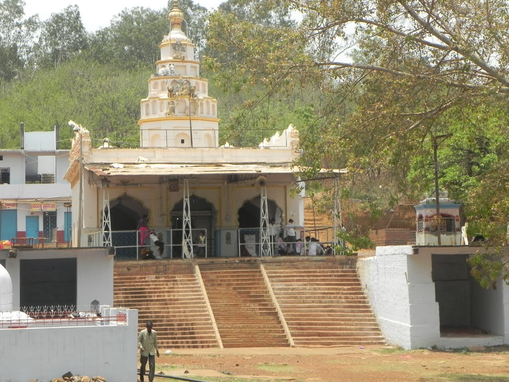
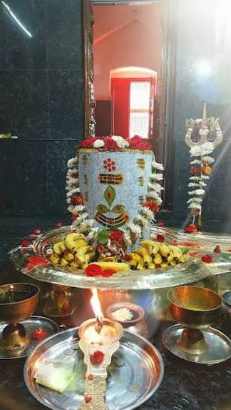
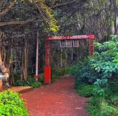
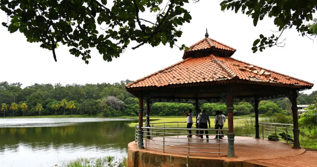

About Papnash Shiva Temple
Papnash Shiva Temple is an ancient Hindu temple dedicated to Lord Shiva, located in Bidar, Karnataka. The temple is known for its historical importance, peaceful surroundings and traditional architecture.
The temple is believed to date back to the 12th century and reflects the architectural influence of the Kalyana Chalukya period.
History
The origins of Papnash Shiva Temple can be traced to the Kalyana Chalukya period. Over the centuries, the temple underwent changes and received architectural influences during the Bahmani period.
The temple continues to be an important religious place for devotees and is especially visited during the festival of Maha Shivratri.
Architecture
The temple displays a combination of Chalukyan architectural features and later regional influences. The complex includes traditional stone structures and an ancient stepped water tank known as a Kalyani.
Papnash Shiva Temple Gallery
Explore the beauty and peaceful surroundings of Papnash Temple.




📍 Location
Papnash Shiva Temple, Bidar, Karnataka, India
🗺️ View on Google Maps